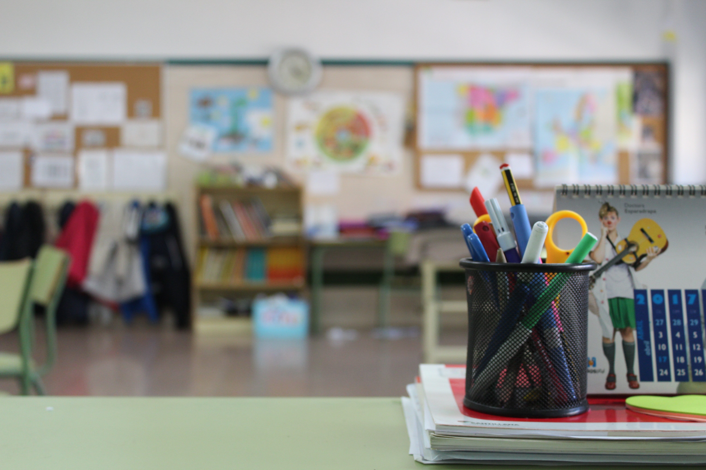

About Us
Here at Sunbeams we provide a high-quality service.
Our mornings start at 7.30 am and we don't finish until 5.30 pm. We provide a nutritious and well-balanced breakfast from 7.30am to 8.30am, after breakfast we drop all our after-school children to school for 9 am, we then collect them when their class time is over and bring them back to the creche. We provide hot meals for all children daily and have a dinner menu on display for all parents to view. The children will then have lunch after dinner in the afternoons also.
Throughout the day the children will engage in messy play, puzzle time, story time, Imaginary play, construction play, free play etc. Each classroom has a designated garden time slot which we use every day. We have an all-weather facility for the children to enjoy each day out our back garden. Here the children can use bicycles, scooters, play football, chasing, engage in messy play with our soil and sand area etc...
We are firm believers in children learning through play, so this play's a large part in the children's daily routine.
Pyjama Day - 9.3.2018